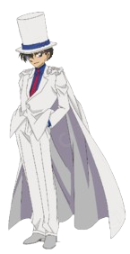

《名偵探柯南》

是日本漫畫家青山剛昌筆下的推理漫畫作品。
描述高中生偵探工藤新一被黑暗組織灌下神秘藥物導致自己縮小後，試圖調查該組織以及破獲其他各種案件找出讓自己能夠恢復原狀的解藥的故事。
原作漫畫從1994年6月開始在《週刊少年Sunday》連載，之後被改編為各種系列的衍生作品，主要包括TMS娛樂製作的電視動畫、劇場版、OVA、漫畫特別篇，和真人電視劇。
改編動畫於1996年播出無論是情節還是案件也大獲好評，至今已成為日本國民級長壽動漫。2001年，原作漫畫獲得第46屆「小學館漫畫賞（少年向）」。
2009年，實現跨作品合作，播齣電視動畫特別篇《魯邦三世VS名偵探柯南》。
自2014年起，為慶祝原作漫畫連載20週年與相關劇場版的上映，於日本、台北、上海等地陸續舉辦各式展覽。此外，為了紀念出身於鳥取縣的作者青山剛昌，除了當地的機場、車站均以《名偵探柯南》為名之外，在許多公共場所也設有本作角色的雕像。
日本版附有Detective Conan的英文名，小學館亞洲的英文版也採此名。但在北美地區，由於Conan被《蠻王柯南》註冊爲商標，漫畫代理商Viz Media考慮到法律限制，而以Case Closed為名發行單行本。